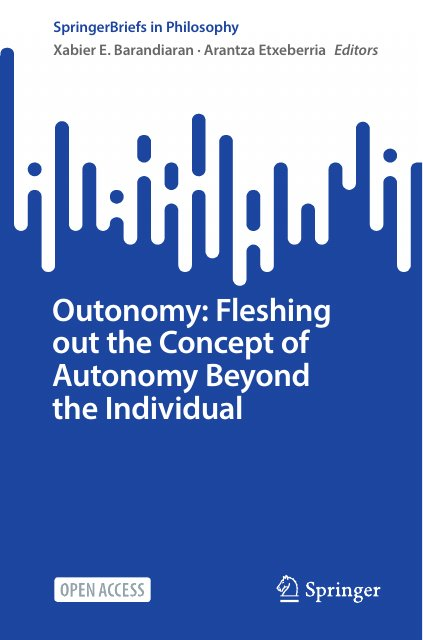

Outonomy: Fleshing out the Concept of Autonomy Beyond the Individual
Springer Nature Switzerland, Cham
Abstract
This volume, edited by Xabier E. Barandiaran and Arantza Etxeberria, is the integrated result of the research project Outonomy. It gathers a cross-disciplinary exploration of autonomy that moves beyond the classic, self-sufficient, abstract, rational and detached model of the individual inherited from modernity. Instead, it develops the concept of outonomy to capture how autonomy is constituted through relations: with environments, other agents, technologies, institutions, and social-ecological systems. The opening chapter outlines four key properties that articulate this shift (interactivity, collectivity, extensionality and environmentality) along two fundamental dimensions (integration and sustainability), reframing autonomy as something that emerges across scales of interaction and dependence rather than something sealed within an isolated individual. The volume is organized into four parts: Theoretical Insights (the conceptual stakes of outonomy, control and organization in biological systems); The Fabric of Life (environments and asymmetries, the origins of life, reproduction, menstrual health); The Psychic Self and Its Environment (psychiatry, salutogenesis, pain); and Technology, Ecology & Politics (technocomplexity, the limits of autonomy in social-ecological systems, subjects-in-common, mindshaping and adaptive preferences).
Keywords
Outonomy · Autonomy · Human autonomy · Animal autonomy · Biology and politics · Contemporary philosophy of autonomy
About the book
From the author’s blog: Outonomy book is out! (5 December 2025)
I am very happy to announce the publication of Outonomy: Fleshing out the Concept of Autonomy Beyond the Individual, edited by Arantza Etxeberria and me. This book is the unified and integrated result of the research project of the same title led by myself and Leonardo Bich that finished over a year ago. The book gathers a rich, cross-disciplinary exploration of autonomy that moves beyond the classic, self-sufficient, abstract, rational and detached model of the individual we inherited from modernity. Instead, it develops the concept of outonomy to capture how autonomy is constituted through relations: with environments, other agents, technologies, institutions, and social-ecological systems.
Why “Outonomy”?
Autonomy has long been central to modern thought, ethics, and the life sciences. But many contemporary debates across philosophy of biology, cognitive science, medicine, technology studies, and political theory show that the boundaries and concerns of the individual move far beyond itself. The outonomy framework responds to this situation by offering a more interactional and environmentally situated account of self-governance and normativity.
In the opening chapter, Barandiaran and Etxeberria outline 4 key properties that help articulate this shift:
- Interactivity
- Collectivity
- Extensionality
- Environmentality
Along two fundamental dimensions:
- Integration
- Sustainability
Together, these ideas reframe autonomy as something that emerges across scales of interaction and dependence, rather than something sealed within an isolated individual.
A structured journey across life, mind, technology, and politics
The volume is organized into four parts that build a coherent arc while engaging multiple domains:
Part I: Theoretical Insights
Foundational chapters clarify the conceptual stakes of outonomy and rethink control and organization in biological systems.
Part II: The Fabric of Life
Chapters address environments and asymmetries, the origins of life, reproduction, and a compelling application to menstrual health.
Part III: The Psychic Self and Its Environment
Here the outonomy perspective extends into psychiatry, salutogenesis, and pain, emphasizing embodied and relational normativity.
Part IV: Technology, Ecology & Politics
These chapters explore technocomplexity, the limits of autonomy in social-ecological systems, subjects-in-common, and mindshaping in relation to adaptive preferences.
Co-authored chapters
I have co-edited the book, and co-authored three chapters:
- Barandiaran, X. E., & Etxeberria, A. (2026). Outonomy, the Very Idea. In X. E. Barandiaran & A. Etxeberria (Eds.), Outonomy: Fleshing out the Concept of Autonomy Beyond the Individual (pp. 3–12). Springer Nature Switzerland. https://doi.org/10.1007/978-3-032-05501-9_1
- Here we introduce the concept of Outonomy as an attempt to overcome some of the limitations of the concept of autonomy as inherited from modernity.
- Cabello, V., Merlo, A., Mancilla, M., Siqueiros, J. M., & Barandiaran, X. E. (2026). Autonomy and Its Limits in Social-Ecological Systems. In X. E. Barandiaran & A. Etxeberria (Eds.), Outonomy: Fleshing out the Concept of Autonomy Beyond the Individual (pp. 121–130). Springer Nature Switzerland. https://doi.org/10.1007/978-3-032-05501-9_12
- In this chapter, we approach the notion of autonomy at its largest planetary scale. Social-ecological systems are in need of a deep exercise of autonomy as self-limitation and care if we are to avoid the increasing destruction of living diversity and flourishing life on earth.
- Calleja-López, A., Pérez-Verdugo, M., & Barandiaran, X. E. (2026). Autonomy and Technology: From Instrumentalism to Technocomplexity. In X. E. Barandiaran & A. Etxeberria (Eds.), Outonomy: Fleshing out the Concept of Autonomy Beyond the Individual (pp. 111–120). Springer Nature Switzerland. https://doi.org/10.1007/978-3-032-05501-9_11
- This chapter captures the dialectical moments that tie autonomy and technology, from the naïve, yet widespread, instrumental use to the techno-complex participatory constitution of our extended life, passing through the persistent thread of an increasingly autonomous techno-economic system that subsumes and alienates human autonomy.
A collaborative research effort
The book emerges from sustained work within the Outonomy research network and related projects, with authors actively reviewing and strengthening each other’s contributions. It also benefits from external reviewers who helped refine the final manuscript.
Cite
Barandiaran, X. E., & Etxeberria, A. (Eds.) (2026). Outonomy: Fleshing out the Concept of Autonomy Beyond the Individual. Springer Nature Switzerland. https://doi.org/10.1007/978-3-032-05501-9
With the Zotero or Mendeley browser connector this page is detected automatically: one click saves the reference, and the PDF when available.
Publication details
- Type
- Book
- Editors
- Barandiaran, Xabier E.; Etxeberria, Arantza
- Series
- SpringerBriefs in Philosophy
- Publisher
- Springer Nature Switzerland
- Place
- Cham
- Date
- 2026
- ISBN
- 978-3-032-05500-2 978-3-032-05501-9
- Language
- English
- DOI
- 10.1007/978-3-032-05501-9
Machine-readable
Markdown · JSON · BibTeX · RIS · llms.txt (index of all publications)